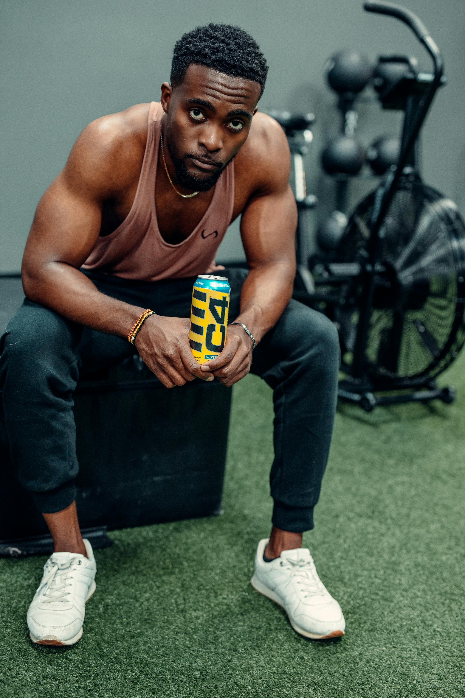
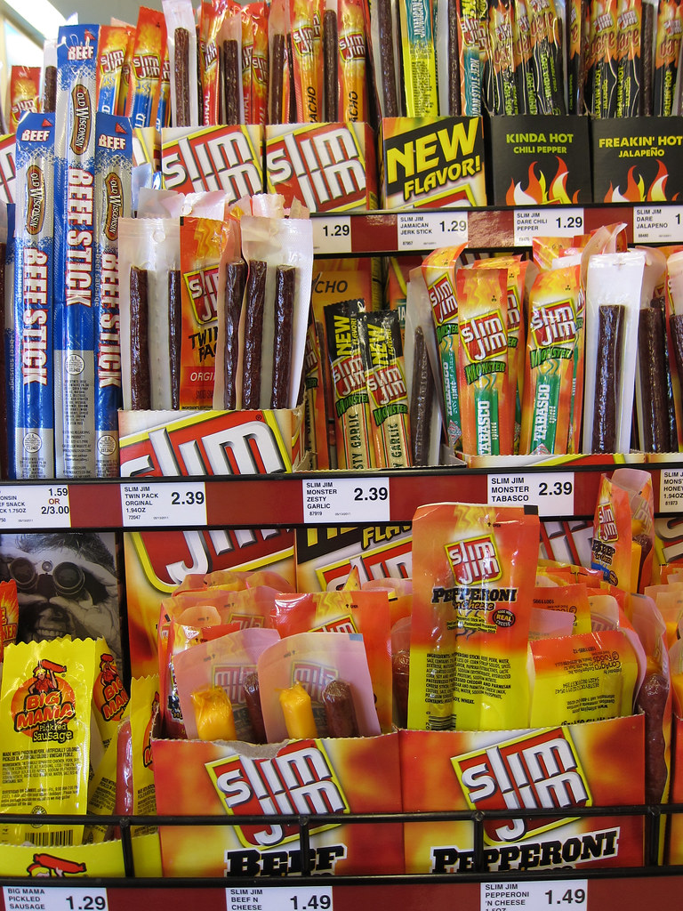

Home
Breakfast of Champions


First Image Credit: Pexels | Second Image Credit: Flickr
Description
The right ingredients prepared in the correct way can kill, wound, heal, nourish, hate, love, and so much more.
These ingredients will propel you to transcend your mortal coils and join the ranks of the undying.
Ingredients
- 2-3oz Slim-Jim Meat Stick of your choice (Depending on your nutritional needs)
- 1 can C4 Performance Energy drink (Sour Gummy Splash preferred)
Steps
- Open C4 and take one regular drink to clean your pipes.
- Open Slim-Jim and take a large bite. Once chewed, take another drink of C4 to help wash it down quickly.
- Take large drink of C4.
- Eat rest of Slim-Jim, sipping C4 as needed.
- Take two large drinks of C4 then drink rest over course of 15-30min.
- Drink nothing but water for next 6 hours. Eat nothing for at least 4 hours.
- If desired, repeat process once after 6 hours. Do not do process more than twice per any 24hr period.
- Watch the world stand still.